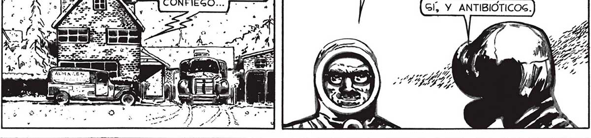

¿COMO EG POGIBLE QUE LA CAIDA DE PRODUC PERO LO MEJOR, JUGTAMENTE, EG NO PENGAR. TOS RADIOACTIVOG DURE TANTO? ADEMAG, EGOG LO PRIMERO, POR AHORA, EG VIVIR. A LUCAS COPOG FOGFOREGCENTEG NO TIENEN AGPECTO Y A TI LEG TOCA EL PROXIMO VIAJE: CARGA DE CENIZA NI DE NADA EN LA FARMACIA EL GURTIDO MAG COMPLETO PARECIDO... NO GÉ QUÉ QUE PUEDAG. ¡GOBRE TODO VITAMINAS ! PENGAR, JUAN, TE LO i ¿QUE CREEG QUE AL PRINCIPIO CREÍ, Gi, HA CAUSADO TO- QUE LA PRUEBA ATODO EGTO2 ¿LA MICA ERA LA CULPAEXPLOGIÓN ATO” BLE. PERO AHORA TENMICA_ EN EL PA- Se MIG DUDAS, JUAN... CIFICO ? , Y ANTIBIÓTICOS. CUANDO TENGAMOG LA CAGA][Gl. Y A ENTERRAR DE EGO GE OCUPARA FAVALLI...ÉL Mé¿QUÉ QUIERES DECIR, BIEN ATIBORRADA DE COGAG | + LOG CAIDOG. TIENE IDEAG PARA TODO...¡ DEMAGIA: LUCAG 2 NOG DEDICAREMOG A DEG-] * , DAG IDEAG PARA TODO! PEJAR LAG CALLEG. py” MOMENTOS DEGPUÉG LUCAG Y YO NOG ACOMODABAMOG EN EL FURGON Y EMPRENDÍAMOG LA MARCHA HACIA LA FARMACIA. dl LR AVANZAMOSG rs A DEGPACIO POR- y Y Miatava como QUE LA CA- A LLE NO EGTABA LIBRE... Ls, ¿NO GE TE HA OCURRIDO ... EGTÉ BIEN LLENA DE TODO, VA A ¡EG TAN FACIL MATAR A UNO fo. PENGAR, JUAN, QUE FAVA- COMPARTIR LA VIDA CON NOGOTROG 9 AHORA! BAGTA CON NO GOPLE- fps LLI NOG TIENE EN GU PO- ¿NO GE TE OCURRE PENGAR QUE TEAR DEBIDAMENTE EL GARA- [e DER 2 QUE EL SABE CUANDO YA NO LE GEAMOS MAG JE. O CON HACER UN PEQUE- ás TANTO DE TODO Y NO- ÚTILEG, GE LAG ARREGLARA PARA ÑO TAJO AL TRAJE AIGLANTE SOTROG TAN POCO ELIMINARNOS ? ... EN GEGUIDA UN COPO GE DE TODO, QUE NOG A AENA. COLARA DENTRO, Y LISTO... TIENE A GU MERCED? ¿POR QUÉ UN HOMBRE COMO ÉL, , bd CUANDO LA CAGA... am | y $” 8
